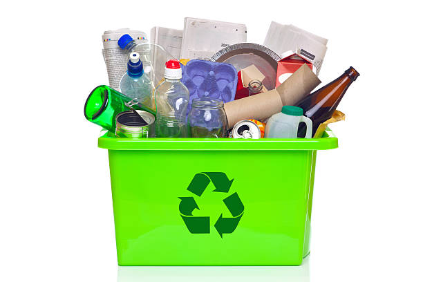

General waste, often referred to as "black bag" waste, includes everyday items that are not recycled or composted. This waste is typically sent to landfills or incinerated, which can have significant environmental impacts. This website provides information about general waste, its effects, and ways to manage it more effectively.

Facts & Figures
General waste is one of the largest categories of waste produced by households and businesses. Proper management is crucial to reducing its environmental impact. Here are some important facts about general waste:
General waste includes non-recyclable and non-hazardous items like food wrappers, broken glass, and non-recyclable plastics.
Approximately 2.01 billion tons of municipal solid waste are generated globally each year, with a significant portion being general waste.
Most general waste ends up in landfills, contributing to pollution and greenhouse gas emissions.
Reducing the amount of general waste generated can help conserve resources and protect the environment.
Types of General Waste
General waste can be categorized based on its origin and composition. Understanding these categories helps in proper waste management. Here are the main types of general waste:
Household Waste: Includes everyday items like food packaging, plastic bags, diapers, and non-recyclable containers. This is the most common type of general waste.
Commercial Waste: Generated by businesses, this type includes packaging materials, office supplies, and food waste from restaurants and cafes.
Industrial Waste: Non-hazardous waste produced by manufacturing and industrial processes, such as scrap materials, offcuts, and packaging.
Institutional Waste: Waste generated by schools, hospitals, and government buildings, including paper waste, food waste, and non-recyclable office supplies.
Construction & Demolition Waste: Includes materials like concrete, bricks, and non-recyclable building materials. While some construction waste can be recycled, a significant portion ends up as general waste.
Properly sorting and managing these types of general waste can significantly reduce their environmental impact and promote more sustainable practices.
Solutions
Managing general waste effectively is essential for reducing its environmental impact. Here are some strategies to help manage general waste:
Reduce: Minimize waste by choosing products with less packaging, using reusable items, and avoiding single-use plastics.
Reuse: Find new uses for items instead of discarding them. For example, repurpose containers or donate old items to charity.
Proper Disposal: Ensure that non-recyclable waste is disposed of correctly in designated general waste bins to avoid contamination of recyclables.
Support Waste Reduction Initiatives: Participate in community clean-up events, waste reduction programs, and advocacy for better waste management policies.
By adopting these practices, we can reduce the amount of general waste produced and minimize its impact on the environment.